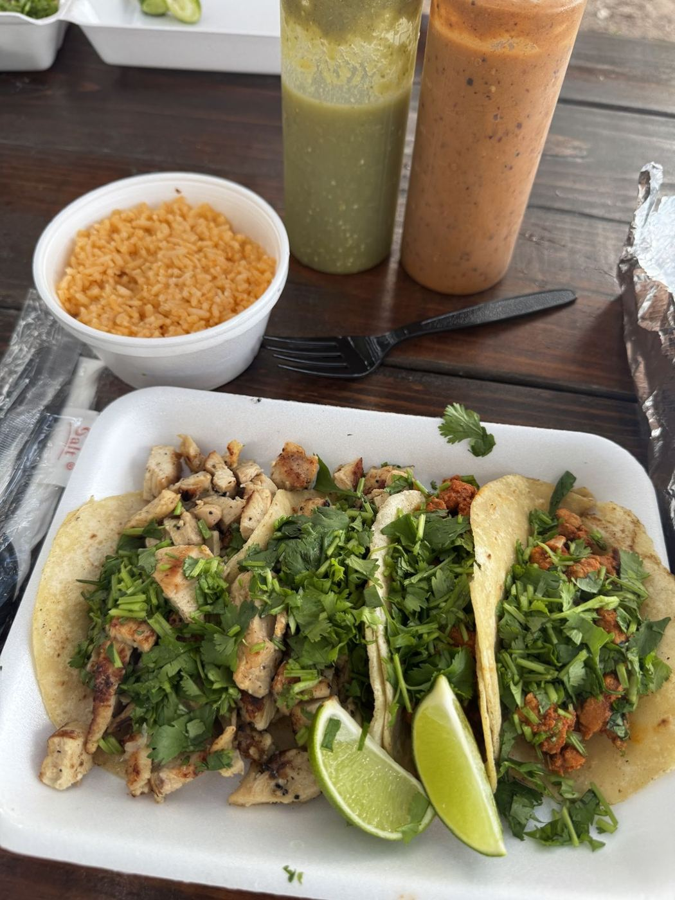
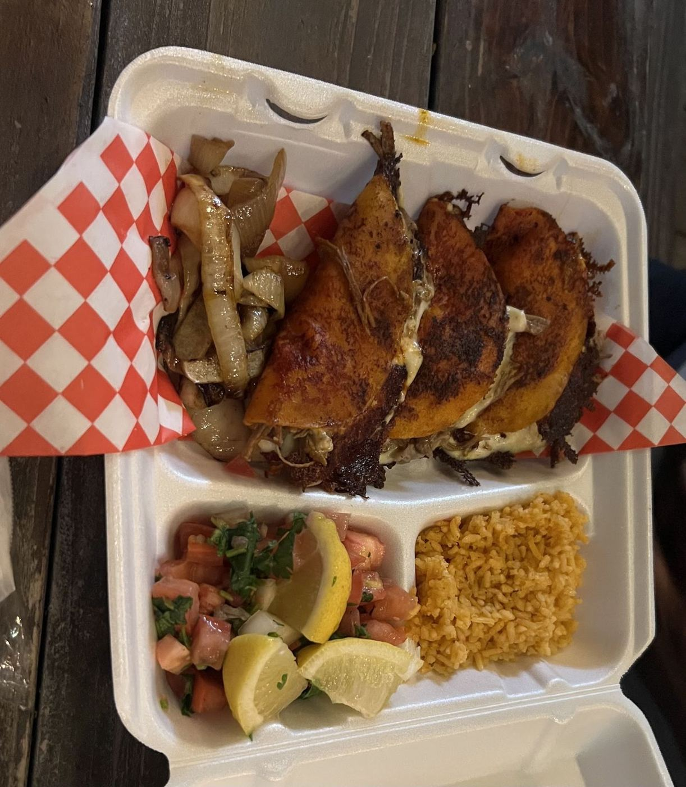

Build your order
Make your list here, then call it in. Everything below comes straight from what customers order.
Street tacos“hot, fresh, and delicious”
Quesabirria tacoswith consomé
Quesadillas“tasted homemade”
Torta
Nachos
Charro beansside
Aguas frescas“tasty and refreshing”
Your list: Nothing yetCall it in
Father & son



“Second time ordering from this taco truck and it’s soooo good!! Upon pulling up to the parking, I was greeted right away. The father and son were so friendly and welcoming, great service. I…”